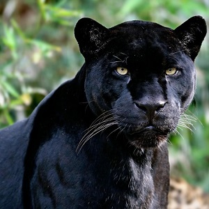

Panter

Een panter is een katachtige met een afwijkende, volledig zwarte tekening, meestal een luipaard of een jaguar . Meerdere katachtige dieren vertonen overvloedige lokale variaties in tekening en pels, resultaten van mutaties in lokale populaties, waarbij koninklijke luipaard vergeleken wordt (zie luipaard ), maar de volledige zwarte vormen van luipaard en jaguar zijn stabiele elementen van de populaties en worden gevonden in het hele bereik van deze soorten. De belangrijkste zijn de zwarte vormen van luipaard ( Panthera pardus ) en jaguar ( Panthera onca ). Een melanistische vorm van puma ( Puma concolor ) wordt genoemd maar nooit gecoat, terwijl verschillende andere kleinere katten goed gecoat zijn in zwarte vormen, waaronder ozelot ( Leopardus pardalis ) en margay ( Leopardus wiedii ).
Aanvankelijk heeft het woord "panter" een variatie van het luipaard betekend die een langere staart heeft gehad en dus geen kleurafwijkingen heeft gehad. In verschillende delen van de wereld heeft het woord panter verschillende betekenissen - het opnemen van jaguars is voornamelijk een Zuid-Amerikaanse traditie, terwijl het woord soms poema bevat in Noord-Amerika en dan niets te maken heeft met het tekenen van kleuren. In Zweeds gebruik heeft de betekenis "zwarte panter" de afzonderlijke betekenis van "panter" eerder volledig overschaduwd.
Bron: Wikipedia